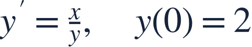
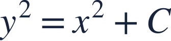
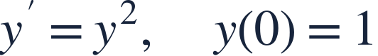

Initial values and domains
초기조건과 정의역

An initial condition chooses a branch and its valid interval, not just a constant.
초기조건은 상수뿐 아니라 해의 가지와 유효 구간도 결정합니다.

An initial condition chooses a branch and its valid interval, not just a constant.
초기조건은 상수뿐 아니라 해의 가지와 유효 구간도 결정합니다.
The differential equation is undefined when y=0.
y=0에서는 미분방정식의 우변이 정의되지 않습니다.
The initial positive value selects the positive square-root branch.
초기값이 양수이므로 양의 제곱근 가지를 선택합니다.

Integrate both sides, absorbing constant factors into C.
양변을 적분하고 상수의 배수를 C에 포함합니다.
Use the initial condition before selecting a branch.
초기조건으로 상수를 구한 뒤 가지를 고릅니다.
This branch stays positive, so the differential equation remains defined.
이 가지는 항상 양수이므로 방정식이 계속 정의됩니다.
Writing ±√(x²+4) as the initial-value solution includes a branch that fails y(0)=2.
±√(x²+4)를 답으로 쓰면 초기조건에 맞지 않는 가지도 포함됩니다.

Given y=1/(1−x), state its maximal interval containing 0.
해가 y=1/(1−x)일 때 0을 포함하는 최대 구간을 쓰세요.